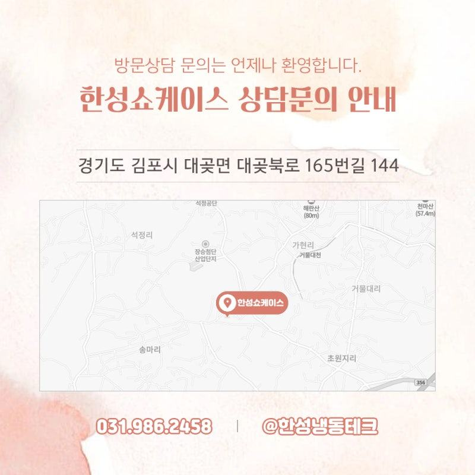
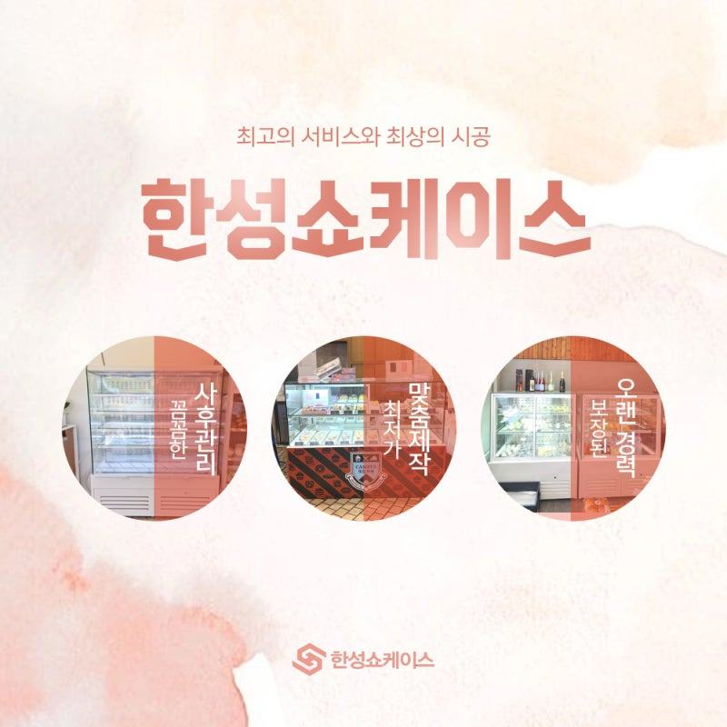
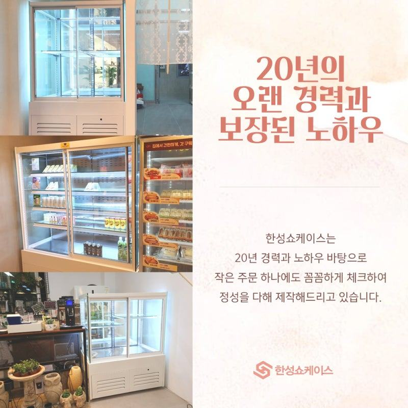
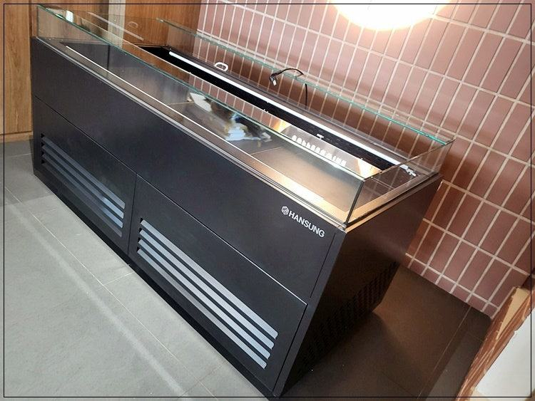
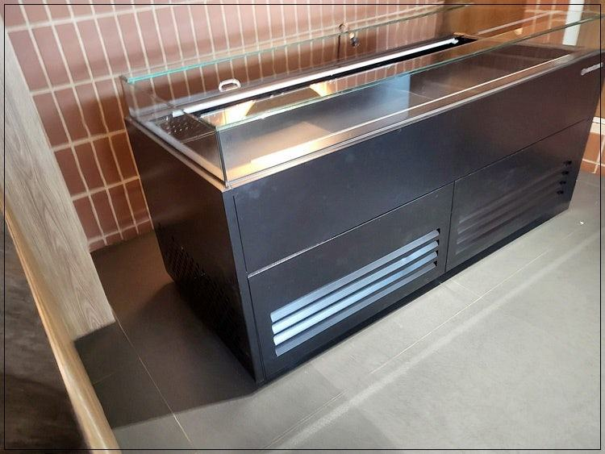
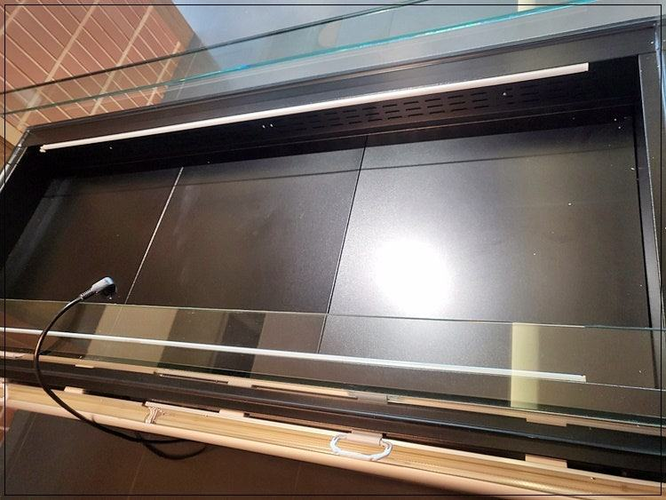
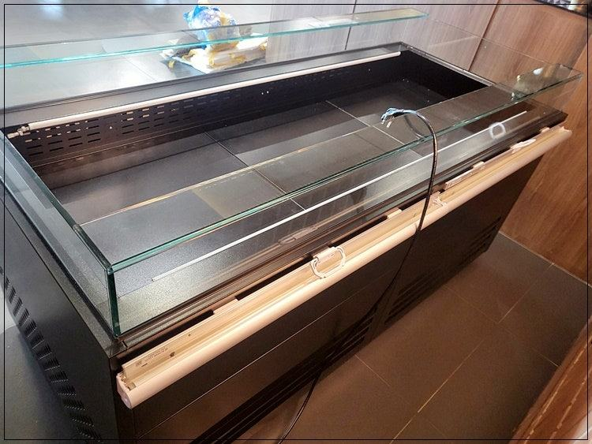
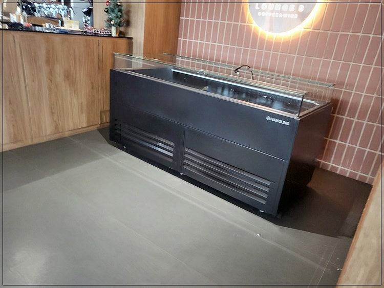

한성제품
편의점 인테리어, 냉장 쇼케이스 벽부터 잡아야 하는 이유

편의점 인테리어는 음료·유제품 냉장 쇼케이스가 들어갈 벽과 전기·배수 위치를 가장 먼저 확정하고, 그 다음 진열대와 계산대 동선, 마지막에 마감재와 조명을 정하는 순서가 안전합니다. 쇼케이스는 매장에서 가장 넓은 면을 차지하는 설비라 외관 색과 조명을 인테리어와 함께 맞추면 매장 전체 인상이 달라집니다.
안녕하세요. 편의점과 마트용 냉장 쇼케이스를 맞춤으로 만드는 한성쇼케이스입니다.
요즘 편의점은 브랜드 간판만 같을 뿐 매장마다 분위기가 꽤 다릅니다. 개인 편의점이나 소형 마트를 여시는 사장님들은 특히 인테리어에 신경을 많이 쓰시는데, 막상 공사를 시작하면 냉장 설비를 어디에 둘지 정하지 않은 채 바닥과 벽부터 손대는 경우가 많습니다.
냉장 쇼케이스는 전기 용량, 실외기, 배수까지 따라오는 설비라 나중에 위치를 바꾸면 마감한 벽과 바닥을 다시 뜯어야 할 수도 있습니다.
매장에서 가장 넓은 면을 차지하니 인테리어 인상도 사실상 쇼케이스가 결정하죠.
오늘은 편의점 인테리어를 냉장 쇼케이스 중심으로, 어떤 순서로 정하면 좋은지 정리해 드리겠습니다.
1. 1순위: 냉장 벽과 설비 위치
음료, 유제품, 도시락처럼 냉장이 필요한 상품은 보통 매장 안쪽 벽 한 면을 따라 길게 배치합니다. 손님이 안쪽까지 들어오게 만들어 그 사이 진열대를 지나치게 하는 효과도 있습니다.
이 벽이 정해지면 전기 용량, 콘센트, 실외기 위치, 배수 경로를 도면에 먼저 그려 넣으세요. 냉장 설비가 여러 대라면 전기 증설이 필요한지도 이 단계에서 확인해야 공사 일정이 밀리지 않습니다.
- 냉장 상품 벽면 위치 확정
- 전기 용량과 콘센트 위치
- 실외기 자리와 배수 경로
2. 2순위: 진열대와 계산대 동선
냉장 벽이 정해지면 그 앞 통로 폭을 먼저 확보하고 나머지 공간에 일반 진열대를 놓습니다. 손님이 쇼케이스 문을 열고 상품을 고를 때 뒤로 다른 손님이 지나갈 수 있어야 동선이 막히지 않습니다.
계산대는 입구 가까이에 두고, 계산대 옆에는 작은 오픈 쇼케이스나 온장고처럼 충동구매를 부르는 설비를 붙이는 경우가 많습니다.
이 자리 크기도 미리 정해 두면 맞는 설비를 고르기 쉽습니다.


3. 3순위: 조명과 외관 색 맞추기
편의점은 밝아야 하지만 천장 조명만 밝으면 쇼케이스 유리에 빛이 반사돼 상품이 오히려 안 보입니다. 쇼케이스 안쪽에 간접 LED를 넣어 상품을 비추고, 천장 조명은 유리에 직접 비치지 않게 위치를 잡아 보세요.
쇼케이스 외관 색은 매장 메인 컬러나 진열대 색과 맞추면 벽 한 면이 하나의 가구처럼 정돈돼 보입니다.
기성품은 색과 프레임이 정해져 있지만, 맞춤제작은 높이와 폭, 색상까지 매장 분위기에 맞춰 바꿀 수 있습니다.
- 쇼케이스 내부 간접 LED
- 천장 조명의 유리 반사 확인
- 외관 색과 진열대 색 통일
4. 계절 설비 자리도 미리
날이 쌀쌀해지면 따뜻한 음료와 간식을 파는 온장고가 필요해집니다. 겨울에 급히 자리를 만들다 보면 계산대가 비좁아지니, 처음 인테리어 때 온장고를 둘 자리와 콘센트를 함께 계획해 두세요.
온장고도 단의 개수, 온도 조절부 위치, 문 여는 방향을 매장에 맞춰 정할 수 있습니다. 여름에는 같은 자리를 소형 냉장 쇼케이스로 바꿔 쓰는 방법도 있습니다.
체크리스트
- 냉장 벽 위치와 설비 도면
- 전기 증설 필요 여부
- 쇼케이스 앞 통로 폭
- 계산대 옆 소형 설비 자리
- 간접 LED와 천장 조명 위치
- 온장고 자리와 콘센트
공간을 최대로 쓰기 위해 1:1로 맞춘 마트쇼케이스
1인 창업 매장이나 공간을 최대한 활용해야 하는 소형 마트를 위해 마트쇼케이스를 1:1로 맞춰 제작한 경우입니다.
진열할 상품의 종류와 양, 크기를 먼저 확인해 전체 틀을 잡고, 높이와 폭, 내부 구성을 매장 특성에 맞춰 정했습니다.
상담 중에는 놓친 부분이 없는지 다시 확인하며 공간 활용도를 높이는 데 집중했고, 다른 매장과 똑같은 모양 대신 매장 분위기에 맞는 디자인과 색상으로 마감했습니다.
공장 직거래로 진행해 유통 마진을 줄였고, 납품 이후 A/S까지 이어서 맡았습니다.





자주 묻는 질문
인테리어 업체와 쇼케이스 업체 중 누구와 먼저 상의해야 하나요?
냉장 설비 위치와 크기가 정해져야 인테리어 도면이 확정되므로 쇼케이스 상담을 먼저 받아 두시는 게 좋습니다.
확정된 치수와 전기·배수 위치를 인테리어 업체에 전달하시면 공사가 매끄럽습니다.
편의점 냉장 쇼케이스 색을 매장 컬러에 맞출 수 있나요?
맞춤제작이라 외관 색상과 프레임을 매장 분위기에 맞춰 정할 수 있습니다. 인테리어 시안이나 컬러 샘플을 보내 주시면 어울리는 조합을 제안해 드립니다.
운영 중인 매장인데 쇼케이스만 교체해도 인테리어가 달라 보일까요?
냉장 쇼케이스는 매장에서 가장 넓은 면을 차지해 교체만으로도 인상이 꽤 달라집니다. 기존 설비 자리의 전기와 배수를 그대로 쓸 수 있는지부터 확인해 드립니다.
매장 조건에 맞춰 만드는 한성쇼케이스
원하시는 제품 사진과 설치할 공간 사진만 보내 주셔도 매장에 맞는 구성을 추천해 드립니다.
- 전국 240여 개 A/S 전담 센터 운영
- 본사 대량 자재 매입으로 품질 대비 합리적인 가격
- 유럽제·삼성 냉각 콤프레셔 적용
- 국내 최초 쇼케이스 전문 디자이너 상주
매장 폭과 원하는 진열 구성을 알려 주세요. 실측과 견적을 안내해 드립니다.
031-986-2458